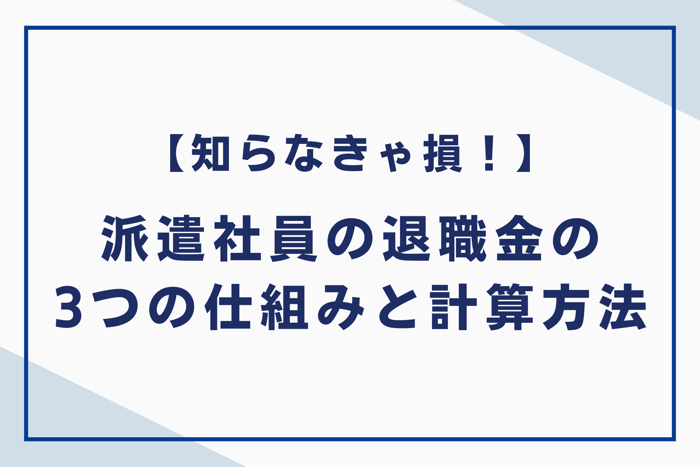
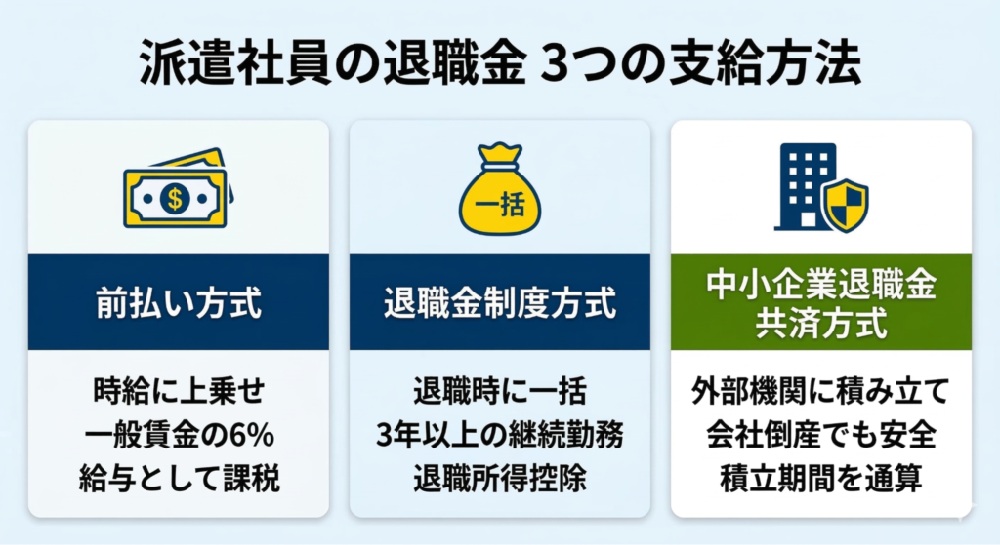
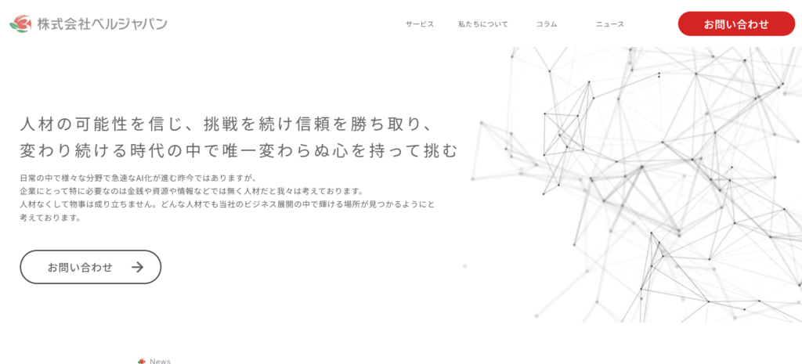

派遣社員の退職金は、以前、支給されないケースが大半でしたが、現在は法改正により状況が大きく変わりました。実際には「同一労働同一賃金」の導入に伴い、派遣会社は退職金制度の整備を義務付けられています。以下の方法で、派遣社員へ退職金を支払われる場合が多いです。
- 方法①時給に上乗せして支払われる「前払い方式」
- 方法②退職時に一括で受け取る「退職金制度方式」
- 方法③外部機関に積み立てる「中小企業退職金共済方式」
この記事では、派遣社員の退職金の仕組み、支給方法、注意点、計算方法、理想の給与体系を実現するステップについて包括的に解説します。また、よくある質問も紹介していますので、ぜひ参考にしてください。

派遣社員が退職金をもらえる仕組み
派遣社員に退職金が支払われるようになった背景には、2020年4月にパートタイム・有期雇用労働法が施行された「同一労働同一賃金」という考え方があります。これは、正社員と非正規雇用の間にある不合理な待遇格差を解消するためのルールです。
派遣会社はこのルールを守るために、主に2つの法的な仕組みのどちらかを選択しなければなりません。
◆退職金を決定する2つの仕組み
| 仕組み | 概要 |
| 派遣先均等・均衡方式 | 派遣先の正社員と同じ基準で退職金を計算する |
| 労使協定方式 | 派遣会社と労働者代表が結んだ協定にもとづき、同業種の一般水準で計算する |
現在、約9割の派遣会社が「労使協定方式」を採用しており、職種ごとの「一般賃金」にもとづいて退職金が算出されます。この仕組みにより、派遣先の規模や予算に左右されず、一定の退職金が保証されるようになりました。

派遣社員の退職金がもらえる3つの支給方法
2020年4月の法改正（同一労働同一賃金）により、現在はすべての派遣スタッフに退職金の権利が保障されています。派遣会社は、自社の運用に合わせて支給方法を選択して、スタッフの待遇を整えなければなりません。
◆派遣社員の退職金がもらえる3つの支給方法の概要図

それぞれの内容について詳しくみていきましょう。
方法①時給に上乗せして支払われる「前払い方式」
前払い方式は、本来の時給に退職金相当額として一般賃金の6％を上乗せして、毎月の給与と合算して受け取る仕組みです。現在、労使協定方式を採用している多くの派遣会社がこの方法を選んでおり、月々の手取り額を確実に増やせる点がメリットです。
一方で、この支払分は法的には「給与」として扱われるため、所得税や社会保険料の負担が増える側面があるため注意してください。将来まとまった金額を受け取るよりも、今すぐ自由に使える現金を確保したい方にとっては、非常に利便性の高い制度となっています。
方法②退職時に一括で受け取る「退職金制度方式」
退職金制度方式は、派遣会社との契約が終了する際や、退職するタイミングでまとまった金額を一括で受け取る仕組みです。正社員と同じような感覚で将来の備えを蓄えられる点が特徴であり、一定期間同じ会社で腰を据えて働きたい方に適しています。
一般的には、3年以上の継続勤務が受給条件となるケースが多く、短期間での離職では支給されない可能性がある点には注意してください。税制面では「退職所得」として扱われるため、毎月の給与に上乗せされる方式よりも所得税や住民税の負担を大幅に軽減できるメリットがあります。
退職所得控除という強力な控除枠を利用できるため、手元に残る実質的な金額を最大化したい場合、この方式は非常に有利な選択肢となります。
方法③外部機関に積み立てる「中小企業退職金共済方式」
中小企業退職金共済方式は、通称「中退共」と呼ばれており、派遣会社が外部の専門機関に掛金を支払い、将来の退職金を積み立てる仕組みです。この方式の大きなメリットは、万が一会社が倒産しても、資産が外部で安全に管理されているため、着実に受け取れる点にあります。
また、転職先も同じ制度に加入していれば、積立期間を通算して引き継げる可能性がある点も心強いポイントです。特定の会社に依存せず、長期的な視点で資産を形成したい方にとって、非常に信頼性の高い選択肢といえます。自分が加入対象か、一度雇用契約書の内容を詳しく確認してみることをおすすめします。
派遣社員が退職金で注意すべき3つのポイント
退職金制度はメリットばかりではなく、受け取り方によって税金や将来の受給権に差が出る場合があります。知らないうちに損をしてしまわないよう、注意すべきポイントをまとめました。
ポイント①所得税や社会保険料の負担が増す
時給上乗せ方式は「給与」として扱われるため、所得税や社会保険料の課税対象となります。手取り額を増やすメリットがありますが、引かれる金額も増える点に注意しなければなりません。
一方、一括支給方式は「退職所得」に分類され、税制上の大きな控除を受けられます。額面が同じでも、最終的に手元に残る金額には差が出る点を理解しましょう。
見かけの金額に惑わされず、手取り額で判断することが賢明です。将来のためにも、引かれる税金の仕組みまで把握してください。
ポイント②派遣会社を変更した際に勤続年数がリセットされる
派遣先が変わっても同じ派遣会社での雇用であれば、勤続年数は通算されます。しかし、別の派遣会社へ移った場合、前の会社での年数は引き継がれません。
一括支給方式では、期間がリセットされて受給資格を失うリスクがあるため注意しなければなりません。現在の積立状況を必ず確認してから、次のアクションを起こすようにしましょう。
会社をまたいでの合算は、特定の共済制度を利用しない限り難しいのが現状です。転職を検討する際は、このリセットのリスクも考慮して判断してください。
ポイント③時給の中に「退職金」が隠されていないか
求人票の時給が他社より高くても、安易に飛びつくのは危険です。その時給の中に、退職金分が含まれており、実質的な基本給は低いというケースも少なくありません。
契約を結ぶ前に、提示された金額の内訳を必ず担当者へ確認してください。内訳を透明化させたり、他社の条件と比較したりすれば、本当の待遇が見えてきます。
「退職金込み」か「退職金別」かを確認して、納得した上で仕事を選びましょう。表面上の数字だけに惑わされないように、細部まで目を通す習慣を身につけてください。
派遣社員が知っておくべき3つの退職金計算方法
自分の退職金がどのように計算されているかを知ることは、将来のマネープランを立てる上で非常に重要です。納得感を持って働くために欠かせない計算方法を詳しく紐解きます。
計算方法①労使協定方式の場合
労使協定方式では、厚生労働省が毎年公表する「一般労働者の賃金水準（一般賃金）」を基準にして計算を行う方法です。具体的には、以下の計算式です。
- 基準時給×6％×月の勤務時間×12か月×勤続年数
この金額は職種や働く地域ごとに細かく設定されているため、自分の職種の基準額を把握することが大切です。
計算方法②退職金前払い制度の場合
退職金前払い制度（時給上乗せ方式）は、計算方法がシンプルで、日々の給与明細でも確認しやすい点が特徴です。基本的には、以下の計算式で算出されて、毎月の給与と一緒に支払われます。
- 退職金相当時給＝基準時給×6％
- 支給される時給＝基準時給＋退職金相当時給
この方式では、働いた時間分だけ確実に退職金が積み上がるため、短期の契約であっても取りこぼしがない点が魅力です。しかし、この上乗せ分は「給与」として扱われ、所得税や社会保険料の計算対象に含まれる点には注意しなければなりません。
計算方法③派遣先均等・均衡方式の場合
派遣先均等・均衡方式を採用している場合、派遣先の正社員が受け取っている退職金と同じ基準で計算が行われます。この方式では、派遣先の退職金規定（就業規則）に従い、勤続年数や役職、退職理由に応じた計算式が適用されることになります。
大手企業などに派遣される場合、ほかの方式よりも算出される金額が高くなる可能性がある点がメリットです。具体的な計算式は派遣先ごとに異なりますが、「基本給 × 勤続年数別係数」といった形式で算出される場合が一般的です。
この方式が適用される際は、派遣会社から派遣先の待遇に関する情報提供を受ける権利があります。
理想の給与体系を実現するための3つのステップ
退職金の有無を知るだけでなく、それを自身のキャリアや収入アップにどのようにつなげるかが大切です。以下のステップを参考に、現在の状況を整理して次のアクションへつなげましょう。
ステップ①現在の支給方式を確認する
まずは、自分が現在どの方式で退職金を受け取っているのか、雇用契約書や就業規則を必ず確認してください。「時給上乗せ方式」の場合、本来の時給と退職金分が明確に区分されて記載されているかを確認することが大切です。
不明な点があれば、派遣会社の担当者に遠慮なく質問して透明性を確保しましょう。自身の待遇を正しく把握することは、将来のライフプランを立てる上での大前提です。法改正により、すべての派遣社員に権利がありますが、会社によってルールが異なるため注意しなければなりません。
ステップ②退職金の算定基準を把握する
「時給上乗せ方式」の場合、厚生労働省が定める「一般賃金」の6％を基準とすることが指針で示されています。自分の時給が地域の平均的な水準と比較して適切か、定期的に市場価値を把握することが大切です。
算定基準を知れば、提示されている時給が妥当なものかを判断する力が身につきます。相場より明らかに低い場合は、担当者に根拠を確認したり、スキルの再評価を求めたりしましょう。
ステップ③長期的なキャリア形成を考える
退職金はあくまで年収の一部であり、本質的な解決策はベースとなるスキルを磨き、時給を上げることが大切です。専門性を高めたり、需要の高い職種へ挑戦したりすれば、結果として退職金の額も比例して上昇します。
将来的に正社員を目指すのか、派遣スタッフとして働き続けるのか、今のうちに出口戦略を明確にしましょう。目先の金額に一喜一憂するのではなく、5年後や10年後の自分を想像して、必要な経験を積める環境を自ら選んでください。
なお、派遣社員の年収を「損せず」上げるための方法については、こちらの記事で詳しく解説しています。
関連記事：【派遣社員必見】「損せず」年収を上げるための3つの方法
派遣社員のキャリア支援なら「株式会社ベルジャパン」

株式会社ベルジャパンでは、派遣スタッフの皆様が将来にわたって安心して働けるよう、退職金制度を含めた福利厚生を完備しています。単にお仕事を紹介するだけでなく、1人ひとりのスキルアップや年収アップを真剣に考え、最適なキャリアパスをともにご提案いたします。
独自のネットワークを活かして、非公開求人を含む多様な案件の紹介が可能です。体力的な負担が少ない仕事や、生活リズムを崩さずに働ける勤務体系など、あなたの希望に合った仕事を見つけられる可能性が高いです。派遣の仕事に対する不安を解消し、納得のいくキャリアを築くために、ぜひ一度ベルジャパンにご相談ください。⇒株式会社ベルジャパンの公式サイトはこちら
派遣社員の退職金でよくある3つの質問
派遣社員の退職金でよくある質問をご紹介します。それぞれ詳しくみていきましょう。
質問①1年未満で契約を終了した場合でも退職金はもらえますか？
結論から言えば、採用されている支給方式によって回答は異なります。「時給上乗せ方式（前払い）」であれば、勤務期間に関わらず働いた分だけ毎月支払われる点が特徴です。
この方式なら、1か月の勤務であってもその分の退職金相当額を確実に受け取れます。一方で、退職時に一括で受け取る制度では、3年以上の継続勤務を条件とする会社が多いです。
1年未満の退職では支給対象外となるリスクが高いため、事前の契約確認が欠かせません。自分の雇用契約書にどちらの方式が記載されているか、チェックしておきましょう。
なお、派遣法3年ルールについては、こちらの記事で詳しく解説しています。
関連記事：派遣法3年ルールとは？例外のケース、キャリアパスの選択肢5つをご紹介！
質問②自己都合で退職した場合、支給額は減額されますか？
多くの派遣会社が採用する「労使協定方式」であれば、自己都合退職でも基本的に減額はありません。この方式は、時給に上乗せして支払うケースが多く、働いた実績に対して一律で算出される仕組みであるためです。
一方、派遣先の正社員と同じ基準を適用する「派遣先均等・均衡方式」の場合は、注意してください。派遣先の退職金規定にもとづき、自己都合の場合は支給率が下がる設定になっている可能性があります。就業規則の「退職金」の項目を精査して、条件による差額の有無を事前に把握しておきましょう。
質問③求人票の時給に退職金が含まれているか見分ける方法はありますか？
求人票の備考欄や、労働条件通知書の「退職金」の項目を必ず確認してください。「時給に退職金6％分を含む」という記載がある場合は、前払い方式であり、記載がない場合は別途支給や制度の確認が必要です。
「他社より時給が高い」と感じる求人でも、内訳を見ると実質的な基本給は他社と変わらないというケースも少なくありません。表面上の数字だけで判断せず、内訳を透明化させて比較することが、納得のいく仕事選びの第一歩となります。
退職金の制度を理解して、最適な派遣の働き方をしよう！
派遣社員の退職金は、以前のような「もらえなくて当たり前」という時代から、法改訂に伴い、「仕組みを理解して賢く受け取る」時代へと変化しました。自分の報酬の内訳を透明化し、納得して働くことが、日々の仕事へのモチベーションと高いパフォーマンスにつながります。
派遣社員の退職金について、以下のポイントを理解しておきましょう。
- ポイント①所得税や社会保険料の負担が増す
- ポイント②派遣会社を変更した際に勤続年数がリセットされる
- ポイント③時給の中に「退職金」が隠されていないか
退職金だけに固執するのではなく、日々のスキルアップを通じて、時給そのものを高めていく姿勢が、結果として大きなリターンを生み出します。今の環境で十分な評価が得られないと感じるなら、キャリアの専門家に相談して新しい扉を開いてみてください。ポジティブな行動が、あなたの未来をより豊かで安定したものへ変えるに違いありません。
株式会社ベルジャパンでは、専任コンサルタントがあなたのキャリアや年収の悩みに寄り添い、非公開求人を含む最適な仕事探しをサポートします。納得のいくキャリアを築くために、まずは公式サイトから無料相談を始めてみましょう。⇒株式会社ベルジャパンの公式サイトはこちら